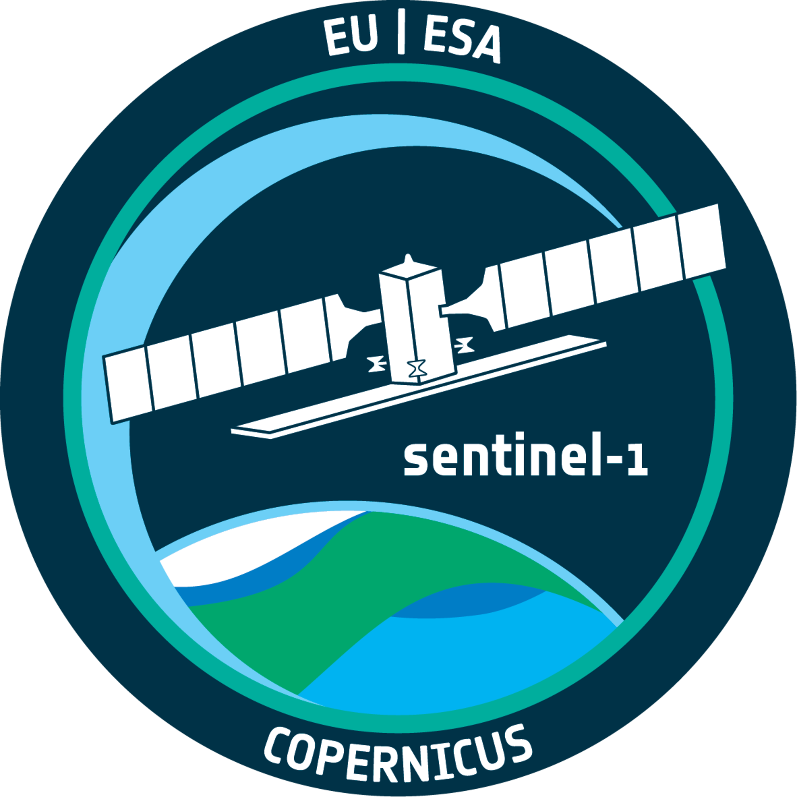

class: center, middle, inverse, title-slide .title[ # Sentinel-1 (SAR) ] .subtitle[ ## <p></p><br/>The European Radar Observatory ] .author[ ### Jaiying LI ] .institute[ ### CASA0023 ] .date[ ### 2026/02/11 ] --- <style> strong, b { color: #005587; } .panelset { --panel-tab-font-size: 0.6em; --panel-tab-active-foreground: #005587; --panel-tab-active-border-color: #005587; --panel-tab-hover-border-color: #007bc3; --panel-tab-font-family: "Arial", sans-serif; } .panel-panel table { font-size: 0.65em; width: 100%; border-collapse: collapse; margin-top: 20px; margin-bottom: 10px; } .panel-panel th { border-bottom: 2px solid #005587; color: #005587; padding: 10px; text-align: left; } .panel-panel td { padding: 20px; border-bottom: 1px solid #eee; } a { color: #007bc3; text-decoration: none; } a:hover { text-decoration: underline; } .remark-slide-content { font-size: 20px; padding: 1em 2em 1em 2em; } .left-60 { float: left; width: 60%; } .right-40 { float: right; width: 38%; } .remark-slide-content::after { content: ""; clear: both; display: table; } strong, b { color: #005587; } </style> # Copernicus: Sentinel-1 — The SAR Imaging Constellation .panelset[ .panel[.panel-name[Copernicus Programme] - **Joint Initiative**: The Sentinel-1 mission is the European Radar Observatory for the Copernicus initiative, a collaboration between the **European Commission (EC)** and the **European Space Agency (ESA)**. - **Core Objective**: Copernicus is designed to implement **information services** for environmental monitoring and security. - **Data Integration**: It relies on a combination of **Earth Observation satellites** (Sentinels) and ground-based (in-situ) information. .center[ <a href="https://sentiwiki.copernicus.eu/web/copernicus-programme"> <img src="images/Copernicus Programme.png" style="width: 35%; border-radius: 10px; box-shadow: 2px 2px 10px rgba(0,0,0,0.2);" /> </a> <p style="font-size: 10px; color: grey;"> [Credits: <a href="https://sentiwiki.copernicus.eu/web/copernicus-programme">ESA</a>]. Source: <a href="https://sentiwiki.copernicus.eu/web/s1-mission#Sentinel-1-Mission">Copernicus SentiWiki (2024)</a>. </p> ] ] .panel[.panel-name[Sentinel-1 Mission] - **The Fleet**: A constellation of **twin satellites** (Sentinel-1A & 1B) designed for the Copernicus program. - **Sensor Technology**: Each carries a **C-band Synthetic Aperture Radar (SAR)**. - **Key Capabilities**: - Provides **all-weather, day-and-night** imagery. - **Revisit Time**: The twins orbit 180° apart, imaging the entire Earth every **six days**. - **Launch History**: S1A launched in April 2014; S1B followed in April 2016. .center[ <a href="https://www.eoportal.org/satellite-missions/copernicus-sentinel-1#copernicus-sentinel-1--the-sar-imaging-constellation-for-land-and-ocean-services"> <img src="images/Artist's view of the deployed Sentinel-1 spacecraft.jpeg" style="width: 28%;" /> </a> <p style="font-size: 10px; color: grey;"> Artist's view of S1 spacecraft. Image Credit: <a href="https://www.eoportal.org/satellite-missions/copernicus-sentinel-1">ESA/TAS-I</a>. Source: <a href="https://www.earthdata.nasa.gov/data/platforms/space-based-platforms/sentinel-1">NASA Earthdata (2023)</a>. </p> ] ] .panel[.panel-name[SAR Technology] - **Active Sensing**: Unlike passive systems (optical), SAR **produces its own energy** and measures the reflected signals (backscatter) from the Earth's surface. - **Operational Advantage**: This "active" nature allows SAR to **overcome low visibility** and **adverse weather** (clouds, fog, rain). - **High Resolution**: Delivers clear, high-resolution images in any environment, making it vital for defense and environmental science. .center[ <a href="https://gno-sys.com/selecting-your-system-synthetic-aperture-radar-sar-technology/"> <img src="images/SAR.png" style="width: 12%;" /> </a> <p style="font-size: 10px; color: grey;"> SAR active microwave sensing mechanism. Source: <a href="https://gno-sys.com/selecting-your-system-synthetic-aperture-radar-sar-technology/">Gnosys Technology (2023)</a>. </p> ] ] ] --- # Sentinel-1 Radar Mission .pull-left[ .panelset[ .panel[.panel-name[Mission Overview] - **Deployment**: Sentinel-1 unfolds its **10-meter long solar wings** and radar antenna in a "carefully designed choreography" after separating from the Soyuz launcher [00:00:12]. - **Active Sensing**: As an **active system**, it illuminates the Earth with radar waves, enabling it to **see through clouds and rain**, regardless of day or night [00:00:33]. - **Efficiency**: A single pass can collect data across a swath of **250 to 400 km**, mapping the world at unprecedented speed and resolution [00:01:39]. ] .panel[.panel-name[Key Applications] - **Emergency Management**: Critical for rapid response during **floods and earthquakes**, and detecting millimetric changes in volcanic activity [00:00:56]. - **Maritime Services**: Enhances global **ship traffic monitoring** and assists icebreakers in identifying safe navigation routes [00:01:12]. - **Operational Continuity**: Part of the **Copernicus program**, ensuring long-term, timely, and easy access to high-quality radar data [00:01:54]. ] ] ] .pull-right[ ### Video Presentation <div class="video-container"> <iframe src="https://www.youtube.com/embed/FJWzLxdSMyA?start=2" frameborder="0" allow="accelerometer; autoplay; clipboard-write; encrypted-media; gyroscope; picture-in-picture" allowfullscreen></iframe> </div> <p style="font-size: 10px; color: grey; margin-top: 10px;"> Source: <a href="https://www.youtube.com/watch?v=FJWzLxdSMyA">ESA - Sentinel-1: Radar mission (2014)</a> </p> ] <style> /* Applying your preferred bold style */ strong, b { color: #005587; } /* Responsive video container for 16:9 ratio */ .video-container { position: relative; padding-bottom: 56.25%; height: 0; overflow: hidden; } .video-container iframe { position: absolute; top: 0; left: 0; width: 100%; height: 100%; border-radius: 8px; } </style> --- # Mission Profile .pull-left[ .panelset[ .panel[.panel-name[Info] | Attribute | Details | | :--- | :--- | | **Mission Name** | Copernicus Sentinel-1 (S1A, S1B, S1C, S1D) | | **Agency** | **ESA**; European Commission (COM) | | **Status** | **Operational** (S1A: Extended; S1B: Ended; S1C: Commissioning) | | **Launch Dates** | S1A: Apr 2014 \ S1B: Apr 2016 \ S1C: Dec 2024 | | **Design Life** | **7.25 Years** (Consumables for 12 years) | ] .panel[.panel-name[Specifications] | Attribute | Details | | :--- | :--- | | **Resolution** | 5 x 5 m, 5 x 20 m, and 25 x 40 m | | **Spectral** | **C-band** (5.405 GHz) | | **Mass** | ~2,300 kg (at launch) | | **Data Policy** | **Free, Full, and Open** (Copernicus) | ] .panel[.panel-name[Orbits] | Attribute | Details | | :--- | :--- | | **Orbit Type** | **Sun-synchronous**, Near-polar | | **LTAN** | Dawn-dusk (18:00) | | **Altitude** | 693 km | | **Inclination** | 98.18° | | **Repeat Cycle** | 12 days (Single); **6 days** (Constellation) | ] .panel[.panel-name[Instruments] | Attribute | Details | | :--- | :--- | | **Primary** | **C-SAR** (Synthetic Aperture Radar) | | **Frequency** | 5.405 GHz | | **Polarization** | Single (HH, VV) & **Dual** (HH+HV, VV+VH) | ] ] ] .pull-right[ .center[ <a href="https://sentiwiki.copernicus.eu/web/s1-mission" target="_blank"> <img src="images/orbit.png" style="width: 40%; border-radius: 5px; box-shadow: 0px 2px 5px rgba(0,0,0,0.2);" /> </a> <p style="font-size: 10px; color: grey;">Sentinel-1 Constellation [Credits: <a href="https://sentiwiki.copernicus.eu/web/s1-mission">ESA/ATG medialab</a>]</p> <a href="https://sentiwiki.copernicus.eu/web/s1-mission#Sentinel-1-Mission" target="_blank"> <img src="images/schematic View of the Deployed Sentinel-1 Spacecraft.png" style="width: 80%; border-radius: 5px; box-shadow: 0px 2px 5px rgba(0,0,0,0.2);" /> </a> <p style="font-size: 10px; color: grey;">Schematic View of Deployed S-1 [Credits: <a href="https://sentiwiki.copernicus.eu/web/s1-mission#Sentinel-1-Mission">TAS-I</a>]</p> ] ] --- # Technical Specifications - Sensor Modes Copernicus Sentinel-1 operates in **four exclusive acquisition modes** to balance swath width and resolution: | Mode | Swath | Res (Rg x Az) | Primary Use Case | | :--- | :--- | :--- | :--- | | **IW** (Interferometric Wide) | 250 km | 5 x 20 m | **Main land mode**; InSAR. | | **EW** (Extra Wide Swath) | 400 km | 20 x 40 m | Maritime, sea-ice, polar. | | **SM** (Stripmap) | 80 km | 5 x 5 m | High-res emergency cases. | | **WV** (Wave) | 20 x 20 km | 5 x 5 m | Ocean wind/waves (sampled). | .center[ <a href="https://www.eoportal.org/satellite-missions/copernicus-sentinel-1#c-sar-c-band-sar-instrument" target="_blank"> <img src="images/modes.jpeg" style="width: 26%; border-radius: 8px; box-shadow: 2px 2px 12px rgba(0,0,0,0.15);" /> </a> <p style="font-size: 10px; color: grey; margin-top: 15px;"> Overview of Sentinel-1 C-SAR observation scheme. <br/> Image credit: <a href="https://www.eoportal.org/satellite-missions/copernicus-sentinel-1">ESA / eoPortal</a> </p> ] --- # Mechanisms - SAR <style> .panel-panel { position: relative; height: 400px; } .panel-content-text { width: 58%; float: left; } .panel-content-image { width: 38%; float: right; text-align: center; } strong, b { color: #005587; } .clearfix::after { content: ""; clear: both; display: table; } </style> .panelset[ .panel[.panel-name[Active Sensing] .panel-content-text[ ### Active vs. Passive Sensing - **Passive**: Records solar radiation reflected from the ground. - **Active (SAR)**: Functions as both **source and receiver**. - **Advantage**: Operates **day/night** and penetrates clouds/fog. ] .panel-content-image[ <a href="https://pro.arcgis.com/en/pro-app/latest/help/analysis/image-analyst/introduction-to-synthetic-aperture-radar.htm" target="_blank"> <img src="images/active.png" style="width: 100%; border-radius: 8px; box-shadow: 2px 2px 5px rgba(0,0,0,0.2);" /> </a> <p style="font-size: 8px; color: grey;">Active vs Passive. Source: ArcGIS Pro.</p> ] ] .panel[.panel-name[Polarization] .panel-content-text[ ### Signal Orientation - **Single Pol**: HH or VV. - **Cross Pol**: HV or VH. - **Vertical (V)**: Detects **elevated objects** (buildings, rough seas). - **Horizontal (H)**: Suitable for **flat surfaces** (rivers). ] .panel-content-image[ <a href="https://pro.arcgis.com/en/pro-app/latest/help/analysis/image-analyst/introduction-to-synthetic-aperture-radar.htm" target="_blank"> <img src="images/Polarization.png" style="width: 100%; border-radius: 8px; box-shadow: 2px 2px 5px rgba(0,0,0,0.2);" /> </a> <p style="font-size: 8px; color: grey;">SAR Polarization. Source: ArcGIS Pro.</p> ] ] .panel[.panel-name[Spatial Resolution] .panel-content-text[ ### Synthetic Aperture - **Concept**: A short antenna mimics a **kilometers-long** one. - **Mechanism**: Signal processing **synthetically elongates** the antenna. ] .panel-content-image[ <a href="https://pro.arcgis.com/en/pro-app/latest/help/analysis/image-analyst/introduction-to-synthetic-aperture-radar.htm" target="_blank"> <img src="images/GUID-9D716342-931F-4B75-B896-9ECE1FF68719-web.gif" style="width: 80%; border-radius: 8px;" /> </a> <p style="font-size: 8px; color: grey;">Synthetic Aperture formation. Source: ArcGIS Pro.</p> ] ] ] .clearfix[] --- # Comparison - Optical and SAR .left-60[ <br> | Feature | Optical Imagery | SAR Imagery | | :--- | :--- | :--- | | **Energy Source** | **Passive** (Sunlight) | **Active** (Radar pulses) | | **Illumination** | Requires daylight | **Works 24/7** | | **Atmospheric** | Blocked by clouds/smoke | **Penetrates** clouds/rain | | **Image Basis** | Reflectance (Vis/IR) | Backscatter (Microwave) | | **Interpretation** | **Visual Traits**: Color, size, form. | **Physical**: Structure, material. | ] .right-40[ <br> .center[ <a href="https://www.youtube.com/watch?v=ecfkPuSe45Y" target="_blank"> <img src="images/sar_optical.png" style="width: 100%; border-radius: 8px; box-shadow: 0px 4px 10px rgba(0,0,0,0.2);" /> </a> <p style="font-size: 9px; color: grey; margin-top: 10px;"> Conceptual Comparison: SAR vs. Optical. <br/> Source: <a href="https://www.youtube.com/watch?v=ecfkPuSe45Y">Everything Earth Observation</a> </p> ] ] .clearfix[] --- # Sentinel-1 C-SAR Application Portfolio .scroll-box[ | Category | Application | Key Features & Technical Utility | Source Reference / Article | URL | | :--- | :--- | :--- | :--- | :--- | | **Land Monitoring** | **Forestry** | Mapping forest extent and monitoring deforestation/degradation using C-band backscatter. | SOFT: Synergetic Operational Forest Monitoring | [Link](https://eo4society.esa.int/projects/soft/) | | **Land Monitoring** | **Agriculture** | Monitoring phenological cycles and crop classification through multi-temporal VV/VH ratios. | Crop changes over one year | [Link](https://www.esa.int/ESA_Multimedia/Images/2021/02/Crop_changes_over_one_year) | | **Land Monitoring** | **Urban Deformation** | Utilizing InSAR to detect structural integrity and ground stability following major incidents. | Beirut explosion: radar analysis | [Link](https://www.earthstartsbeating.com/2020/08/11/beirutexplosion/) | | **Land Monitoring** | **Landscape Topography** | Generating high-resolution digital elevation models and global backscatter mosaics (S1GBM). | Sentinel-1 Global Backscatter Model | [Link](https://sentiwiki.copernicus.eu/web/s1-products#Sentinel-1-Global-Backscatter-Model-(S1GBM)) | | **Land Monitoring** | **Soil Moisture** | Retrieval of Surface Soil Moisture (SSM) by analyzing sensitivity of backscatter to water content. | Copernicus Global Land: Soil Moisture | [Link](https://land.copernicus.eu/global/products/ssm) | | **Land Monitoring** | **Vegetation** | Tracking vegetation optical depth and biomass changes via time-series SAR indices. | SentiWiki: Vegetation Monitoring | [Link](https://sentiwiki.copernicus.eu/web/s1-applications#Vegetation) | | **Maritime Monitoring** | **Ice Monitoring** | Tracking sea-ice concentration, type, and iceberg drift to ensure safe polar navigation. | Sentinel-1: Antarctic sea ice and sheets | [Link](https://www.youtube.com/watch?v=cpYrnP_B3qc) | | **Maritime Monitoring** | **Ship Monitoring** | Near real-time detection of vessels and shipping lanes, regardless of AIS transponder status. | Bay of Naples: Shipping from Space | [Link](https://www.esa.int/ESA_Multimedia/Images/2020/07/Bay_of_Naples_Italy) | | **Maritime Monitoring** | **Oil Pollution** | Detection of oil slicks (dampening of capillary waves) for environmental enforcement. | Oil spill spread detection | [Link](https://www.esa.int/ESA_Multimedia/Images/2018/10/Oil_spill_spread) | | **Maritime Monitoring** | **Waves and Winds** | Extracting ocean swell spectra and wind speed vectors using SAR Wave (WV) mode. | Medicanes: Monitoring Numa | [Link](https://www.earthstartsbeating.com/2017/11/24/medicanes-numa/) | | **Emergency Management** | **Flood Monitoring** | Rapid mapping of water-covered areas during extreme weather events and cloud cover. | Copernicus Emergency Management Service | [Link](https://emergency.copernicus.eu/) | | **Emergency Management** | **Earthquake Analysis** | Mapping co-seismic surface displacement and fault lines using D-InSAR techniques. | Türkiye/Syria Earthquakes impact | [Link](https://www.esa.int/Applications/Observing_the_Earth/Satellites_support_impact_assessment_after_Tuerkiye_Syria_earthquakes) | | **Emergency Management** | **Landslide / Volcano** | Monitoring pre-eruptive ground inflation and slope stability to mitigate geological risks. | Evaluating ground deformation via S-1 | [Link](https://www.linkedin.com/pulse/using-sentinel-1-satellite-evaluate-ground-deformation-caused-/) | ] .footnote[ [1] Bauer-Marschallinger, B., et al. (2021). [The normalised Sentinel-1 Global Backscatter Model...](https://doi.org/10.1038/s41597-021-01059-7) *Sci Data* 8, 277. [2] ESA, [Sentinel-1 Applications Guide](https://sentiwiki.copernicus.eu/web/s1-applications). *Copernicus SentiWiki*. ] <style> .scroll-box { height: 420px; overflow-y: scroll; display: block; } /* Optional: ensures the table takes full width inside the scroll box */ .scroll-box table { width: 100%; } .footnote { font-size: 0.8em; color: #777; position: absolute; bottom: 1em; left: 2em; } </style> --- # Reflection: SAR Pros, Cons & Integration .left-60[ .panelset[ .panel[.panel-name[Advantages] - **All-weather & 24/7**: Penetrates clouds, smoke, and rain; independent of solar illumination. - **Material Penetration**: Microwaves can "see through" foliage and dry soil to reveal subsurface structures. - **High Dynamics**: Achieves up to **25cm resolution** with frequent revisits, ideal for urban expansion monitoring. ] .panel[.panel-name[Limitations] - **Speckle Noise**: Inherently affected by "salt and pepper" graininess, complicating fine-feature classification. - **Technical Complexity**: Requires specialized processing for geometric and radiometric calibration. - **Non-Intuitive**: Backscatter is sensitive to **roughness and moisture** (dielectric), not color, making visual interpretation harder. ] .panel[.panel-name[Future Integration] - **Complementary Nature**: It’s not SAR *vs.* Optical; they are **complementary**. Combining SAR's structural data with Optical's spectral detail provides the most robust monitoring solution. - **GIS Integration**: Adding GIS layers (land cover, boundaries) provides the necessary **spatial context** to turn radar backscatter into actionable intelligence. ] ] ] .right-40[ <br> .center[ <a href="https://elisecolin.medium.com/why-a-sar-image-is-not-your-usual-optical-one-2ee3f199c5ef" target="_blank"> <img src="images/imagesar.png" style="width: 100%; border-radius: 8px; box-shadow: 0px 4px 12px rgba(0,0,0,0.2);" /> </a> <p style="font-size: 8px; color: grey; margin-top: 10px;"> Spatial Resolution vs. Pixel Size in SAR. <br/> Source: <a href="https://elisecolin.medium.com/why-a-sar-image-is-not-your-usual-optical-one-2ee3f199c5ef">Elise Colin (Medium)</a> </p> ] ] <style> .left-60 { float: left; width: 60%; } .right-40 { float: right; width: 38%; } .remark-slide-content strong { color: #005587; } .panel-panel { font-size: 0.8em; line-height: 1.6; } .footnote { font-size: 0.5em; color: #777; position: absolute; bottom: 1.5em; left: 3em; } .clearfix::after { content: ""; clear: both; display: table; } </style> .clearfix[] ---